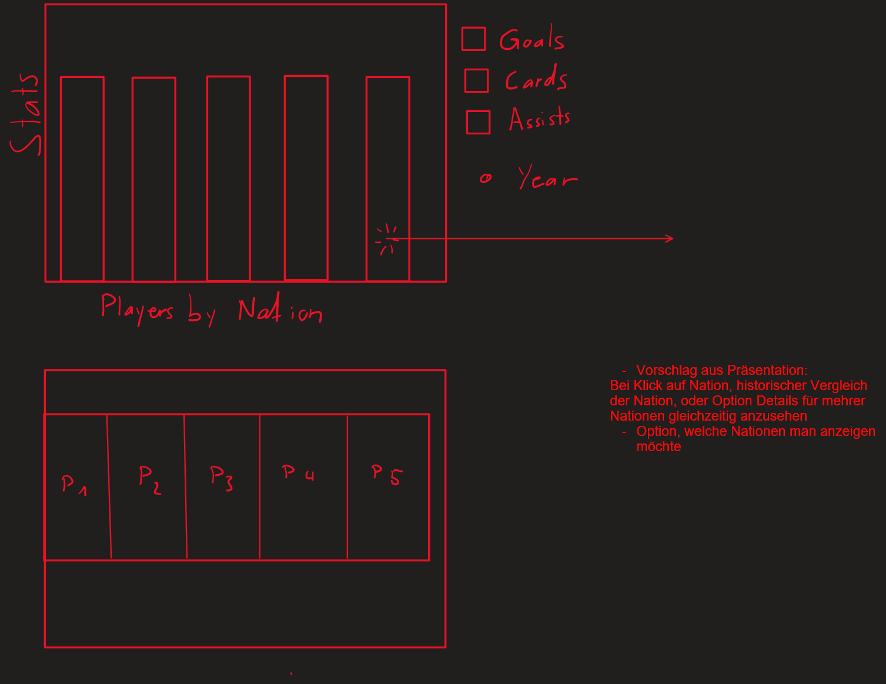

This project is our first visualization using more sophisticated tools than Excel. As such, our main goal was to learn how to use the D3 framework and figure out what makes a graph intuitive, pleasant to read, and informative. Starting from scratch is tough, so in order to stay motivated throughout this project, we opted for a topic that is of great personal interest to both of us: football. Even if it might not make for the most practically useful of studies, it is a topic that we are passionate about.
Another reason why we chose football is that there is a wealth of data readily available online. Few sports have fans this crazy about statistics. We started our work by weighing which data football fans are most interested in. We concluded it would be goals and assists, and to a lesser degree, cards.
For our first project, we decided to keep things simple and envisioned a bar chart as our starting point. This chart allows users to compare the aggregated stats (e.g., goals) per country per year. Each bar in the chart can be clicked to reveal a more detailed view of the stat. This drill-down would showcase the top 10 players contributing to that stat for the chosen country, using either a Stacked-BarChart, TreeMap or PieChart (see the sketch below).
During the presentation of our concept, the idea of comparing the details nations emerged, which we plan to implement after realizing our first sketch. Further ideas include features such as displaying the value for each top player on hover or showing their photo (from Transfermarkt links) on hover, as this data is available in our dataset. As our knowledge as business information students is limited we didn't implemnt these features.
